Wolfgang Langewiesche’s classic book Stick and Rudder: An Explanation of the Art of Flying, first published in 1944, remains the definitive description of how to fly a small piston powered aircraft under visual flight rules. The book teaches aviators to fly the wing -- since the airplane is merely a wing with whatever supporting machinery necessary to make it work -- and that the most important quantity for that task is the angle of attack (AoA).
Seventy years later, we have a proliferation of small aircraft under the US Light Sport rule and the EU and Australian Microlight categories. One would think the manufacturers of such aircraft would heed Mr Langewiesche’s advice. However, a survey of the panels sold with these airplanes shows a dazzling array of expensive instrumentation.
But 3D synthetic vision is in no way relevant to VFR flight when one can simply look out the window! And in the meantime, pilots continue to guess at the AoA from other cues such as speed, attitude, wind noise and other factors. These are important skills, and those who master them are rightly proud. But they need not be necessary skills -- at least not unless the flight instruments fail (and modern instruments can be very reliable).
Airball is a proposal for a display that should change all that. It combines AoA, angle of sideslip and indicated airspeed into one simple, glance-able visualization that is easy to interpret. And that means the pilot spends less time looking at the instrument, and more time looking out the window.
In a sense, Airball is the instrument one would design if one's goal were to not have people look at it.
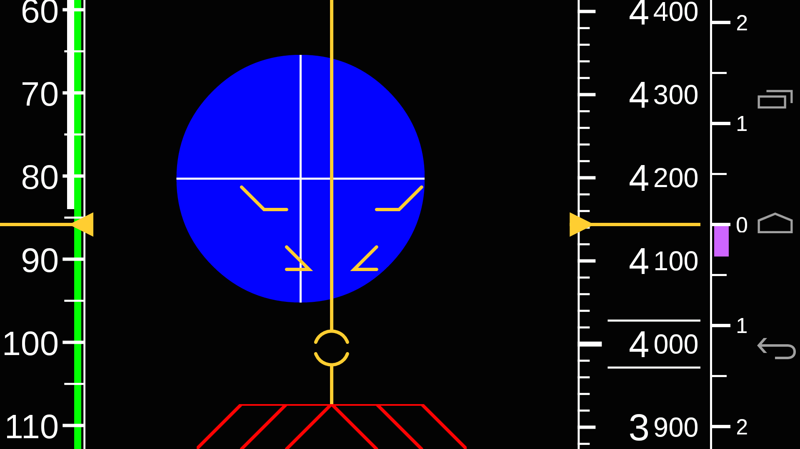
The ball (the blue dot) directly visualizes the relative wind vector -- where the wind is coming from relative to the airplane.
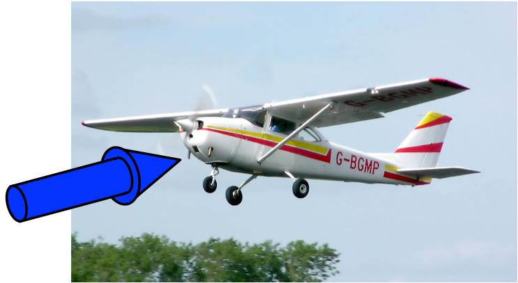
“Ball left” means the wind is coming from the left, i.e., the aircraft is yawed right. “Kicking the ball”, in the usual fashion, corrects the yaw. “Ball low” means the wind is coming from below, i.e., the aircraft is at a high AoA. The instrument is “fixed” to the airframe, so diving the airplane makes the ball rise relative to the instrument -- and reduces the AoA.
The diameter of the ball is proportional to indicated airspeed. Incidentally, the human eye perceives areas more than absolute sizes, so the perceived “bigness” of the ball is proportional to dynamic pressure. And it starts to “feel” much larger at higher airspeeds, near cruise, which fits our earlier observation about the importance of airspeed over AoA at cruise flight. But note how we achieve this without a mode switch; it is just a natural, seamless part of the analog feel of the instrument.
We can add traditional speed, altitude and climb rate tapes. These help with annotating V speeds and altitude station keeping, respectively, and complete the picture to make this a total primary VFR instrument.
We build the speed tape with higher speeds down rather than up. This fits the intuition that diving, to reduce AoA, makes both the ball and the speed tape (and, for that matter, the altitude tape as well) move up relative to the instrument. Consistency is key.
Airball for Android is an Android app that demonstrates how Airball would work. It is not intended to be used in an airplane, though we have managed to patch an Android device to the RS-232 output from a Dynon Avionics setup to use it in-flight. It can, however, be hooked up to X-Plane in a number of ways, which is our recommended way to demonstrate it.
Airball for Android has two view modes, a Full PFD view, which locks orientation to Landscape mode, and an Analog only view, which locks orientation to Portrait.
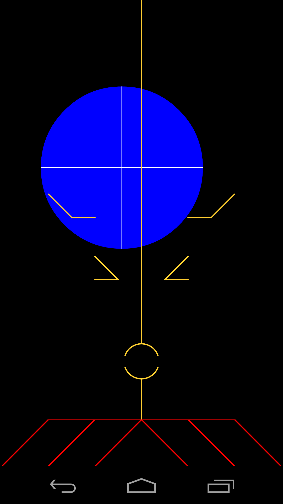
In either case, touching the display brings up the Settings view:
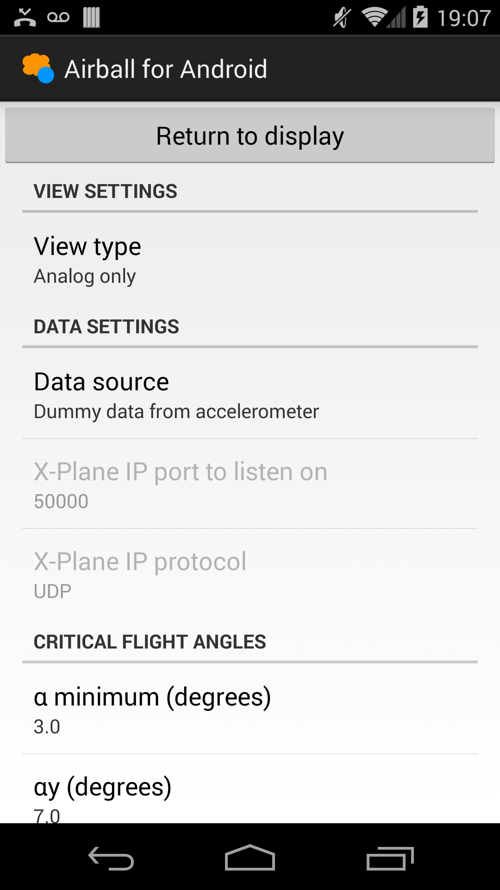
and the Return to display button returns to the currently selected display mode.
The PFD is divided into the following sections:
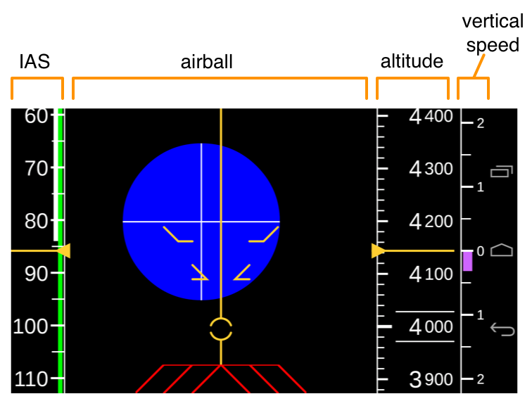
IAS: Shows indicated airspeed according to the usual conventions. Note higher speeds are “down” since this provides a more consistent motion of the display elements in response to stick-up or stick-down input.
airball: Shows the airball, which we describe below.
altitude: Shows altitude in feet according to the usual conventions.
vertical speed: Shows vertical speed in feet/minute according to the usual conventions; the small graduations are at 500-foot intervals and the large, numbered graduations read in thousands of feet/minute.
The airball is interpreted the same whether in PFD or Analog mode. We use the Analog mode display to describe operation of the airball section:
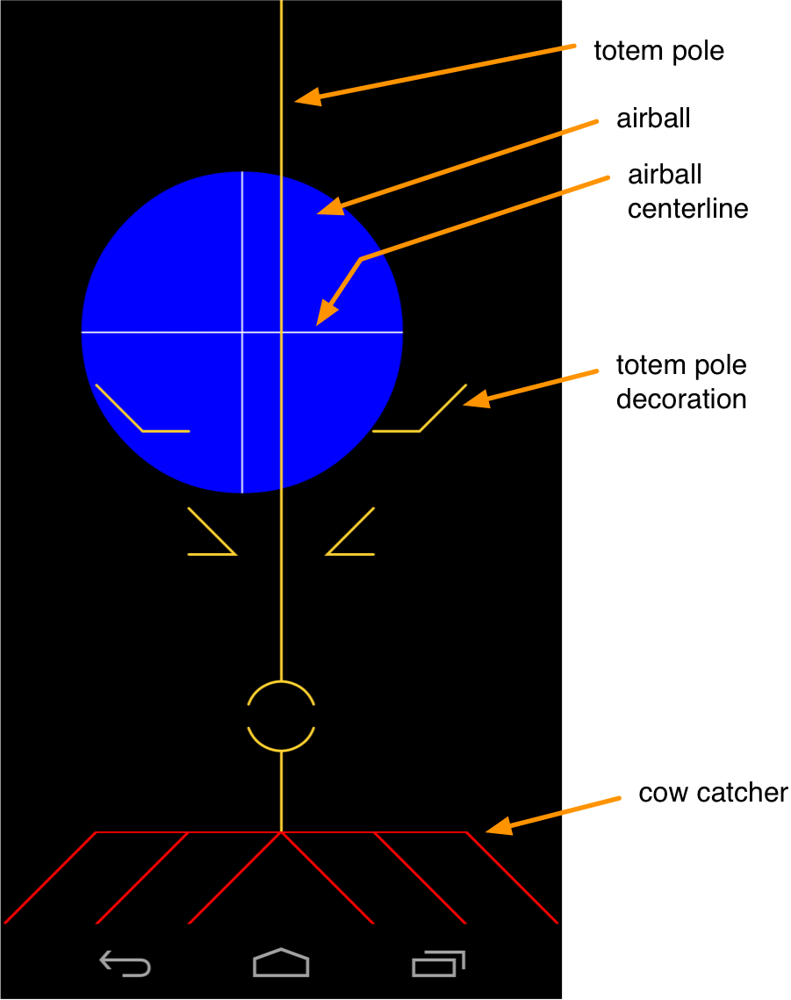 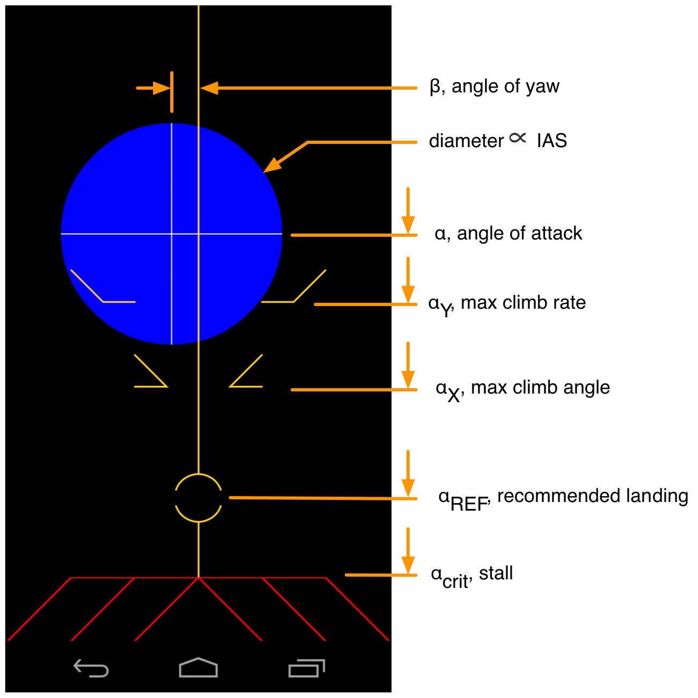
The blue ball moves to indicate values of AoA and yaw. It always moves to the direction the relative wind is coming from relative to the aircraft. Larger angles of attack are represented by the ball moving lower. In this sense, the “kick the ball” convention to correct yaw works as usual.
The diameter of the ball is proportional to IAS. Usefully, as a result, its area (which human eyes perceive) is therefore proportional to dynamic pressure, which is in turn the quantity that is linearly proportional to lift.
View type: Selects Full PFD or Analog only as described above.
Data source: Selects between:
Dummy data from accelerometer: Move the device around to simulate flying and watch the display change.
Constant data for UI testing: A constant snapshot of data.
Dynon Skyview data over Bluetooth: Experimental, unused.
X-Plane data over IP: Sync airdata to running instance of X-Plane, described below.
X-Plane IP port to listen on: The local IP port used for X-Plane integration, described below.
X-Plane data protocol: Selects TCP or UDP as the protocol for receiving X-Plane data, as described below.
α minimum: The minimum AoA expected to be shown, corresponding to a position 10% of the way down from the top of the display.
αy: The best climb rate AoA.
αx: The best climb angle AoA.
α ref: The recommended landing final approach AoA.
α stall: The stall AoA, αCRIT.
β full scale: The full scale sideslip angle expected for the current aircraft.
Vs0, Vs1, Vfe, Vno, Vne: The standard “arc” speeds on the ASI, for the current aircraft.
The primary intention for this release of Airball is to allow users to experiment with it in conjunction with X-Plane. These instructions were written for X-Plane 10, but may be valid for older versions as well.
We recommend that you use X-Plane’s Plane Maker to remove the primary flight instruments from the airplane model you are using (make a backup copy of the airplane folder first). This way, you will be able to truly get a feeling for what it’s like to fly with Airball.
X-Plane will send data packets out over UDP to any host. Specific data sets may be turned on or off.
To enable the correct data sets for Airball, in X-Plane, go to the menu Settings | Data Input and Output and select the Data Set tab of the Data Input and Output screen:
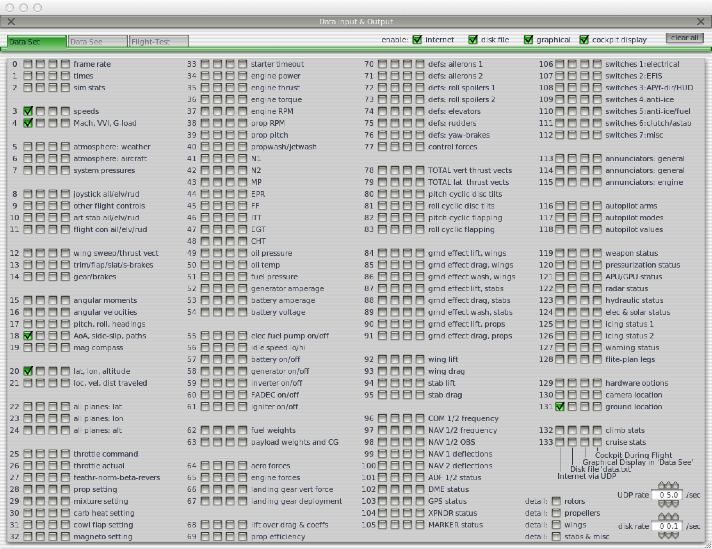
Ensure that data sets 3, 4, 18 and 20 are selected for internet output. In the UDP rate selector, select a rate between 5.0 and 10.0 updates / second.
Now go to the menu Settings | Net Connections and select the Data tab of the Net Connections screen:
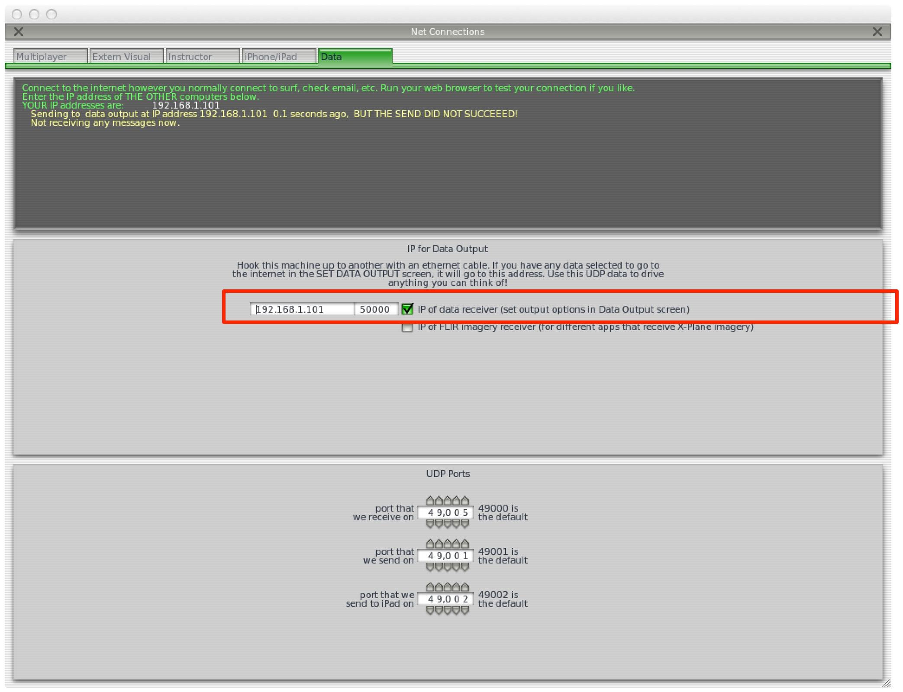
Ensure that IP of data receiver is checked and enter the IP address and port number of the data receiver as required. This information will be different depending on the method whereby you integrate with X-Plane.
The integration methods are shown diagrammatically below:
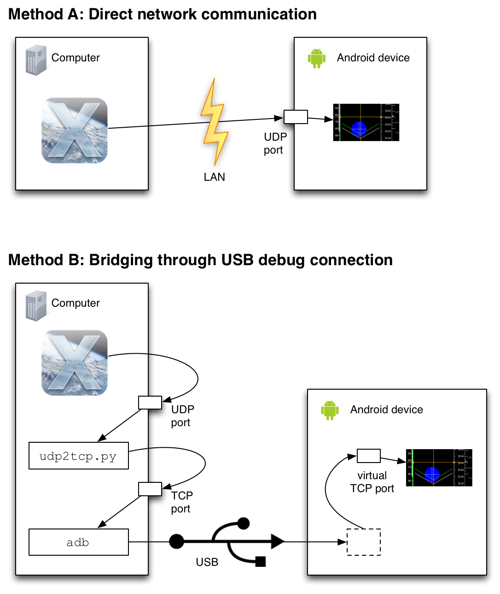
Choose Method A if both your computer and your Android device are on the same LAN (typically Wi-Fi) and the LAN allows hosts to address and send IP packets to one another directly.
Choose Method B (which requires more setup) only if you do not have access to a LAN meeting these specifications.
Find out the IP address of the Android device on your LAN. This is typically found from the Android Settings screens:
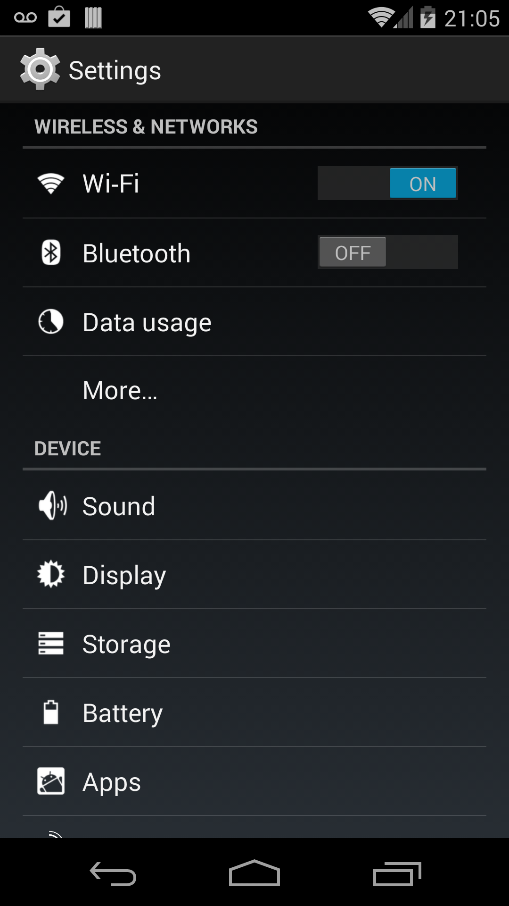 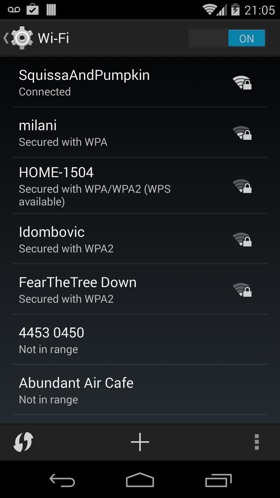 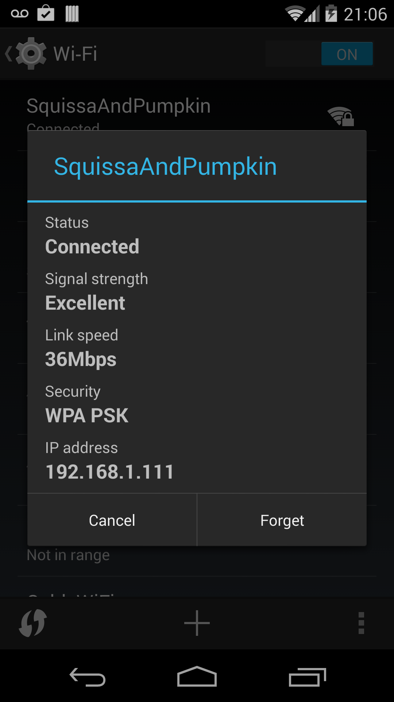
In the X-Plane Net Connections screen (described above), enter that IP address as IP of data receiver, and enter a suitable port number (we use 50000).
In the Airball settings, ensure that:
Data source is X-Plane data over IP
X-Plane IP port to listen on is the port you selected, such as 50000
X-Plane data protocol is UDP
When you run X-Plane, you should see the flight data on the Airball display.
Set up your Airball settings as with Method A, except ensure that:
X-Plane data protocol is TCP
Now ensure your Android device is connected to your computer and is set up for USB debugging via the adb utility. We do not describe here how to do that; please consult common resources on Android programming to learn how to do so.
In the X-Plane Net Connections screen (described above), enter the localhost IP address (127.0.0.1) as IP of data receiver, and enter some new port number (we use 49998). This will send UDP messages to the local host, accomplishing the first “hop” in the diagram above.
Now run the accompanying Python utility udp2tcp.py
to listen on that same UDP port and echo the packets to a TCP
port. We pick 49999 for the TCP port. If you make
the same choice, you would issue a command like:
./udp2tcp 49998 49999
Now, set up the Android adb utility to forward the
local TCP port to a virtual port on the Android device. Assuming
you chose 50000 as the port on the Android device (as selected in
the Airball settings), you would issue:
adb forward tcp:49999 tcp:50000
This should complete the necessary connections and you should see the flight data on the Airball display.